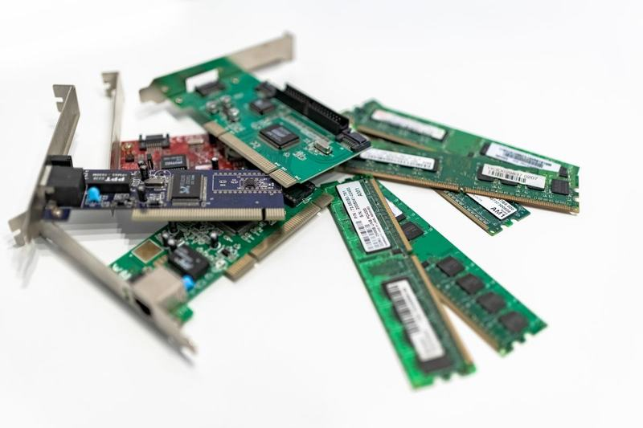
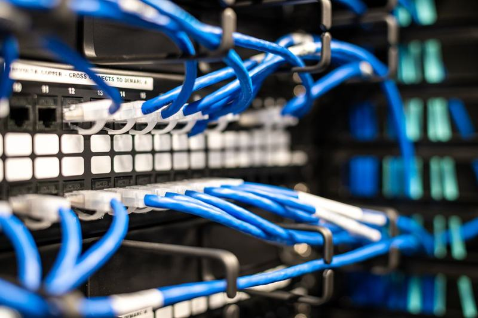

IT üzemeltetés
A szolgáltatás megrendelése esetén cégünk átveszi az Ön informatikai rendszerének üzemeltetésével kapcsolatos feladatokat.
Szolgáltatások
Fix havidíjas rendszerfelügyelet, felhasználó támogatás, hálózatépítés és eszközbeszerzés egy kézből.
A szolgáltatás megrendelése esetén cégünk átveszi az Ön informatikai rendszerének üzemeltetésével kapcsolatos feladatokat.

Szerződéses partnereink számára biztosítjuk a megfelelő hálózati eszközök, hardverek, szoftverek, valamint irodai kellékanyagok beszerzését.

A megbízható és hatékony informatikai rendszer alapja a megfelelő hálózati infrastruktúra megléte.
Munkatársainak és alkalmazottainak minden technikai segítséget megadunk, amire munkájuk során szükségük lehet.
Vállalkozásunk fő tevékenysége informatikai rendszerek üzemeltetése kis és középvállalatoknak, intézményeknek.
A jelenlegi gazdasági helyzetben a pénzügyi és emberi erőforrások apadása elengedhetetlenné teszi a működési struktúra és a kiadások ésszerűsítését. Ilyen lépés lehet külső informatikai szolgáltató alkalmazása, hiszen az informatikai tevékenység kiszervezése már rövid távon költségcsökkenést és növekvő hatékonyságot eredményez.
Az informatikai rendszer külső szolgáltató általi üzemeltetése olcsóbb, mint saját munkatárssal, a költségek pedig jól tervezhetők és ellenőrizhetők. Ma már a kis és középvállalatok több mint 50%-a külső informatikai szolgáltatót bíz meg az IT rendszereinek üzemeltetésével.
Szolgáltatásainkat fix havidíjas rendszerben ajánljuk, de eseti jelleggel, óradíjas formában is állunk ügyfeleink rendelkezésére.
A jelenleg szerződéses ügyfeleinknél, cégünk által felügyelt munkaállomások és szerverek aktuális száma.
Kérjen ajánlatot, vagy hívjon minket – szívesen áttekintjük az Ön informatikai rendszerét.